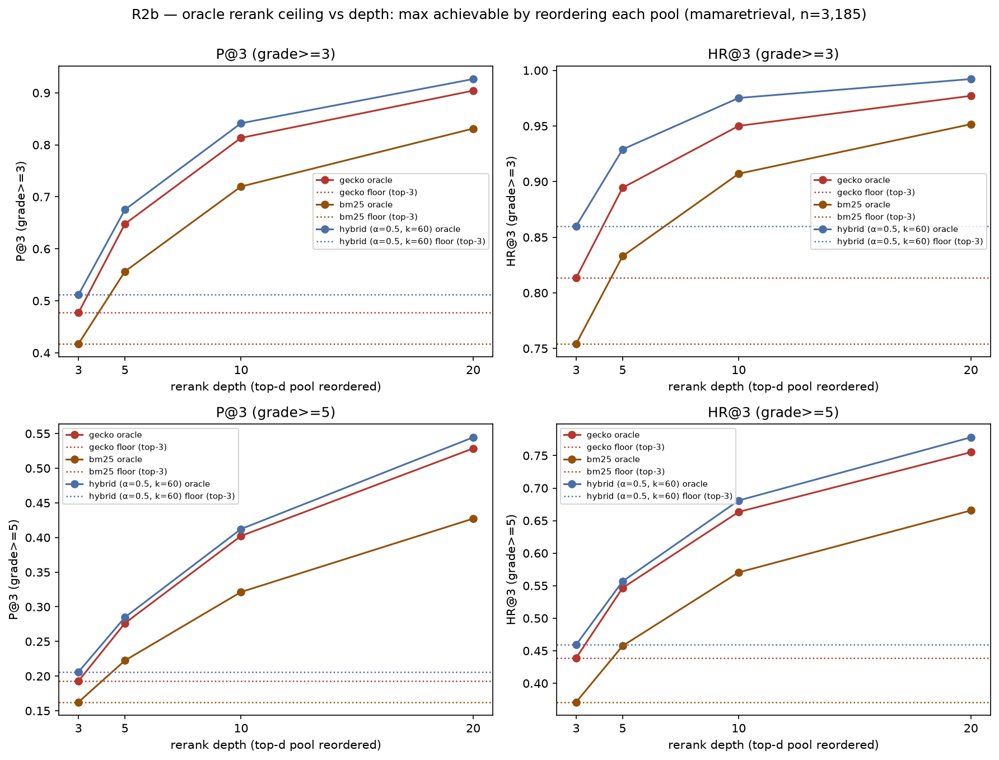

2026-06-13 · config-v0.2.0 · branch feat/r2-retriever-upgrade-20260613 ·
step R2b of the R2 plan
Reranking is the strongest offline-identified lever so far — a clear go to scope
a real reranker. Perfectly reordering the hybrid's top-20 pool would lift bundle
precision P@3 from 0.512 → 0.926 (lenient) and 0.206 → 0.545 (strict): the useful
chunk — even the complete/actionable one — is usually already retrieved but
buried below rank 3. Most headroom is captured by rerank depth ~10. Caveats: this
is the oracle upper bound (a real reranker captures a fraction), and a
residual structural miss remains that reranking can never fix — ~2% of queries
(lenient) and ~22% (strict) have nothing relevant in the top-20 at all, leaving
that slice to R2c/C1.
Method
A reranker can only reorder a retriever's top-k pool, never add chunks. So the
maximum any reranker can reach is the oracle: reorder the top-d
pool by the true judge grade, keep the top-3. We compute that ceiling for the
three deployable pools (Gecko, the R2a hybrid α=0.5/k=60, BM25) against the
actual top-3 floor, as a function of rerank depth d. Pure offline arithmetic on
the mamaretrieval audit (n=3,185) — no model, no GPU, no new judging.
The oracle uses the same 0–6 grades that define P@3/HR@3, so it is optimal by
construction — that is the definition of the ceiling, not leakage. It
bounds what a reranker could do; it does not prove a real one will. Sanity check:
oracle at depth 3 equals the floor exactly (reranking the top-3 changes nothing).
Results

Oracle P@3/HR@3 vs rerank depth, one solid line per pool; dotted
lines are each pool's floor (actual top-3). Lenient (top row) and strict
(bottom). Depth 3 = floor by construction.
Pool
cut
floor (top-3)
oracle@5
oracle@10
oracle@20
Gecko
P@3 ≥3
0.477
0.648
0.813
0.904
Hybrid
P@3 ≥3
0.512
0.675
0.842
0.926
Gecko
P@3 ≥5
0.193
0.276
0.402
0.529
Hybrid
P@3 ≥5
0.206
0.285
0.412
0.545
Hybrid
HR@3 ≥3
0.860
0.929
0.975
0.992
Hybrid
HR@3 ≥5
0.459
0.557
0.681
0.778
Readings
Large headroom on lenient relevance. The hybrid's floor
P@3 0.512 rises to an oracle 0.926 — nearly double. HR@3 reaches 0.992: for
all but ~1% of queries a relevant chunk is already in the top-20, just not
the top-3. Reranking is exactly the lever for that.
Reranking also helps the strict cut — revising the R2a read.
R2a found fusion barely moved strict P@3 (0.193→0.208). Reranking is
a different lever: the oracle lifts strict P@3 to 0.545 and strict HR@3 from
0.459 → 0.778. The complete/actionable chunks are often in the pool
but ranked below 3 — fusion can't surface them, reordering can. (Consistent
with R2a: the two levers fix different failures.)
A residual structural miss remains. Oracle@20
HR@3 caps at 0.992 lenient but 0.778 strict — so ~22% of queries have
no complete/actionable chunk anywhere in the top-20, which no
reranker can fix. That slice is the true content gap for R2c (better
embedder) / C1 (corpus).
Depth ~10 captures most of it. Hybrid lenient P@3 is 0.675
@5, 0.842 @10, 0.926 @20; strict 0.285 / 0.412 / 0.545. Most headroom lands
by depth 10, with a still-meaningful tail to 20. A shallow reranker (top-10)
is a reasonable latency-bounded default; going to 20 buys the strict tail.
Rerank the hybrid pool. Its ceiling dominates Gecko's and
BM25's on every metric and depth — the R2a fusion gain compounds with
reranking rather than competing with it.
Decision
Go: scope a real on-device reranker. This is the largest
offline-identified retrieval lever to date — the bottleneck today is ranking,
not (mostly) retrieval coverage. Build/evaluate a quantized, LiteRT-feasible
cross-encoder or lightweight reranker over the hybrid top-10–20 pool.
Temper by the oracle gap. These are upper bounds; a real
reranker captures a fraction. The next step is not free — it needs an
actual reranker model scored against the same labels (with a clean train/test
split). R2b establishes that scoping it is worthwhile.
The strict structural tail still routes to R2c/C1. Reranking
lifts strict substantially but plateaus at ~0.78 HR; closing the rest needs a
better embedder or richer corpus, validated end-to-end per the R2 guardrails.